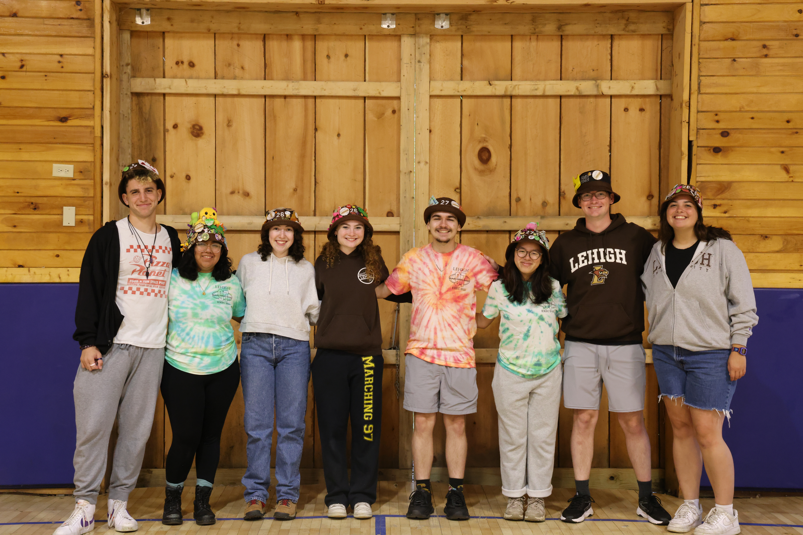
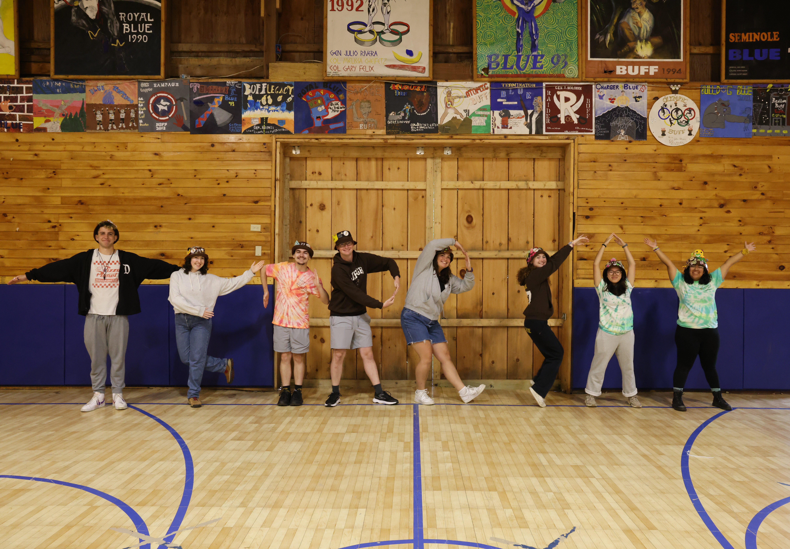

Rank 11
Rank 11 is the traditional home of the tenor saxophones, a group that never runs out of noise or sass. They bring their unique sense of humor to all events! Easily spot them with their iconic head tilts during tailgating and their constant laughter! They really are the most iconic rank! The 97 certainly wouldn't be the same without Rank 11 around.
Rank Leader: Avery McGarry '26
Avery McGarry is a senior majoring in English and Theatre with a minor in music! She is originally from Fleetwood, PA! Avery is also a part of TRAC Fellows, Kappa Kappa Psi, Hawkathon, and is a Column Writer for the Brown & White! Her favorite part of the Marching 97 is the people! She is truly grateful for all the wonderful friendships she has made that never would have happened without Marching 97. When asked why she joined the Marching 97 she said, "I did Marching Band in high school but was on the fence about continuing it in College. When I figured out my freshman roommate (Grace Ditmar) was joining the band, however, I took it as a sign I should too. Thank you Grace!!"" Her favorite memory is the Holy Cross Flame! A fun fact about Avery is that she is a frequent sleepwalker! She has broken her tailbone, called the police, taken showers, and held full conversations while sleepwalking before.

